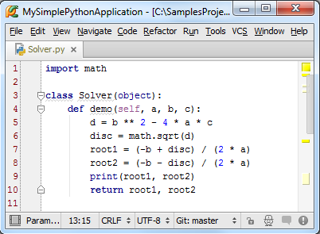

最全Pycharm教程（2）——代码风格
1、主题
这部分教程主要介绍如何创建一个Python工程并使其具有Pycharm的代码风格。你将会看到Pycharm使你的源码变得非常简洁美观，带有合适的缩进、空格等等，因此Pycharm也是一款代码质量管理的利器。
这部分教程并不会介绍如何使用Python进行编程，更多有关Python编程的知识请参照：Python编程
2、准备工作
在开始之前，请确认一下情况：
（1）安装了Pycharm2.7或更高版本的软件
（2）已经新建了一个Python工程（File→New Project），详情参照：Pycharm新建工程文件
（3）已经在工程下添加了两个目录：src和test_dir（File→New or Alt+Insert），详情参照：Pycharm新建工程文件
（4）已经向工程目录下添加了对应的Python文件（File→New or Alt+Insert），详情参照：Pycharm新建工程文件
3、代码报错的高亮模式
打开一个新建的Python文件进行编辑（F4），这个文件中默认有两行代码：作者姓名和工程名称。之所以会出现这两行代码，是因为Python文件在创建时是基于文件模板进行创建的，因此会预定义这两个变量。
接下来输入关键字class，当你开始输入时，Pycharm的拼写提示机制会立即列出候选项来帮助你完成代码：
（参照Pycharm拼写提示来了解Pycharm更多关于拼写提示的信息）
这个红色波浪线标记了下次代码输入的期望位置，在这种情况下，它是一个预输入定义符。键入类名Solver，红色波浪线将会移动到类名之后。如果你将术鼠标指针悬停在波浪线上，将会看到所提示的错误信息（"Colon expected"），当然，此时位于右侧滚动栏的红色标志也会给出相同的错误信息。
OK，输入冒号，回车。根据Python代码风格标准，需要定义下一个类声明，当然此时我们可以通过输入空格来取消它。
4、聚焦PEP8代码风格检查
然而，在默认情况下这些警告提醒是不可见的，所以首先需要做的就是提升它们的优先级以进行显示。单击设置按钮，然后在Settings/Preferences对话框中的 Inspections 页面，键入PEP8来找到所有相关选项，在对应的下拉菜单中选中warning选项：
单击应用，关闭对话框，返回源码编辑界面。
5、详解PEP8代码风格
现在Ptcharm已经能够正常显示它的代码规范，确保你编写的代码格式的完整性。接下来当我们输入下一条语句（例如def demo(self,a,b,c):），Pycharm将根据PEP8的代码规范机制来报告当前存在的格式问题。
正如你所见到的那样，Pycharm将其所支持的PEP8规范设置为默认的正规Python代码格式标准。如果你打开inspections的列表，（Ctrl+Alt+S→Inspections），可以看到Pycharm在你的代码中加载了pep8.py工具，用来精确定位你的代码风格问题。
6、代码检查以及相关设置
顺便说一下，如果你仔细观察 Inspections page页面中 inspection profile的缺省设置（如果你是第一次进行设置的话）会发现，Pycharm已经将所有的代码规则用于当前的工程中了。
接下来我们对代码检查机制做两方面的改动：
（1）在测试脚本中，将拼写错误标记为绿色
（2）在说明文档（注释）中，将拼写错误改为红色提示
接下来我们一一进行介绍
7、创建一个作用域
首先我们需要创建两个作用域用来进行两个不同应用范围的设置。单击设置按钮进入 Settings/Preferences对话框，打开Scopes页面，单击上方绿色的加号来创建一个局部类型的作用域：
在Add New Scope对话框中，键入作用域名称，然后在工程管理器（树型结构）中选择需要包含到当前作用域中的目录：test_dir，注意此时的Pattern栏已经自动显示加载路径：
重复上述步骤再新建一个Production作用域。
8、在新建的作用域中创建代码检查控制文件
接下来，创建一份缺省代码控制文件的拷贝文件（处于安全考虑）：
然后在对它进行命名，例如我们这里命名为MyProjectProfile。这个新的配置文件是之前默认缺省配置文件的复制版，两者的设置内容完全相同。
接下来选中我们拷贝的代码控制文件，定位到Spelling项进行相应改动。为了快速找到Spelling选项叶，只需在搜索栏中输入Spel即可。
然后通过单击绿色的加号来添加我们之前新建的Test作用域，然后再次单击添加Production作用域：
在Test作用域中，代码检查的严格等级如图中左侧所示，Production作用域中有类似设置，不过所选择的下拉列表中的安全等级不同：
留意对话框中作用域名称的字体颜色，如果为灰色则说明未做改动，若是蓝色则说明已经更改了相关设置。
应用更改设置然后关闭对话框。
此时，按照要求修改后的配置文件已经完成，名为MyProjectProfile，其在Test作用域和Production作用域中有不同的拼写检查设置。接下来我们将这个配置应用于对应代码区域，在主程序菜单中选择Code→Inspect Code，在对话框中指定已经定义好的作用域和配置文件：

当然我们需要操作两次，因为有两个定义域需要进行相关配置的更改，并且可以将相关的配置清单导出。
比较一下这两个作用域的拼写检查结果：
正如你所见，在Production作用域为红色波浪线，在Test作用域为绿色波浪线。
9、错误提示的高亮代码显示
除此之外，Pycharm还会根据配置文件控制，对当前的一些错误进行高亮显示处理。
举个例子，如果你的拼写检查配置文件中包含"Unresolved references"这条检查规则，同时你又使用了一条尚未进行import的符号，Pycharm就会用下划线标出无法解释的符号来提示你导入相关模块：
参考auto-import tutorial来完成相关模块的导入工作
10、快速成型以及多次提示
你是否已经注意到在代码左端经常出现一个亮起的黄色或者红色的灯泡然而你却并不希望看到它？
11、源码自动生成
Pycharm提供了很多代码自动生成机制，你可以参照product documentation中有关自动生成代码的介绍：Auto-generating code，接下来我们探讨一下Pycharm的主代码生成机制。当然我们需要先将 Solver.py中已有的内容删除，重新开始。
首先，创建一个类实例：
OK，Pycharm成功创建出了一个类：
接下来我们向类中添加一个成员方法，为了达到这个目的，首先需要在类实例后面输入一个点号，然后键入成员函数名称。此时这个成员函数是未定义的，因此Pycharm会提示我们来创建一个：
然后在函数体中手动输入源码，例如我们输入一段计算二次方程判别式的程序，其中有一个函数sqrt（）来自math模块，但目前尚未被包含，我们继续输入，看Pycharm如何解决这个问题：
因此，我们源码最终如下：

然而，代码缺少一些重要的逻辑分析。我们需要分析判别式结果d，如果它是零或者正数，则正常求解方程的根；如果其为负数，我们需要抛出一个异常，Pycharm会如何帮助我们完成这个任务？
让我们用if语句来包含一块代码，即选中当d为非负数时需要执行的语句：
然后按下Ctrl+Alt+T，或者单击主菜单中的Code→Surround With选项，Pycharm将会弹出一个下拉菜单，显示当前情况下可用的范围控制结构：
选择if选项，Pycharm会自动添加if True：语句到选中的行：
这里我们并不对布尔表达式做过多解释，根据需要我们直接将True替换成d >= 0，接下里将光标定位到最后一行，回车，光标将会出现在下一行，和if保持相同的缩进，输入else：，然后观察Pycharm给出的预输入提示：
再次回车，移动光标，这里我们在Pycharm强大的拼写提示下输入抛出异常的代码：

12、代码格式修改
再次观察Solver.py文件会发现，右边滚动槽中显示了很多黄色标记，将鼠标悬停在上边，Pycharm将会显示对应的代码格式问题：
好在这些信息都是警告信息，并不会影响到代码的运行结果，但是格式问题实在是太多了，那么如何把代码格式调整得更为美观规范呢？
这里所用到的就是code reformatting了，不妨尝试一下。
为了调用格式化操作，只需按下Ctrl+Alt+L快捷键，或者在主菜单中单击Code→Reformat Code，此时我们惊奇发现所有的PEP8类格式问题都已经消除。
当然我们可以自定义格式化标准，打开 code style settings对话框，选择指定语言（Python），进行必要的更改即可：

13、添加注释文档
代码格式调整完之后，左侧仍然留有一些黄色的标志位，鼠标悬停后提示类似于"Missing docstring"的警告信息，代码前方亮着的小黄灯泡也提示同样的信息：
解决方法也很简单，在弹出的下拉菜单中选择Insert docstring，Pycharm就会自动添加一段带格式的文本作为注释文档：
注意这里有若干中注释文档的格式，你可以在Python Integrated Tools页面中设置当前需要插入哪种格式的注释文档，例如Epytext、plain text等
14、输入注释
注释文档用以解释函数的参数、返回值、变量的类型及含义。举个例子，我们需要控制demo()的输入参数类型，我们就需要在注释文档中添加相应的注释信息：
至此，主函数的注释文档完成。
接下来在函数调用的过程中，若出现参数类型不匹配的情况，Pycharm会依据注释文档来给出响应的错误提示信息：

更多有关Pycharm注释文档的信息参见： type hinting。